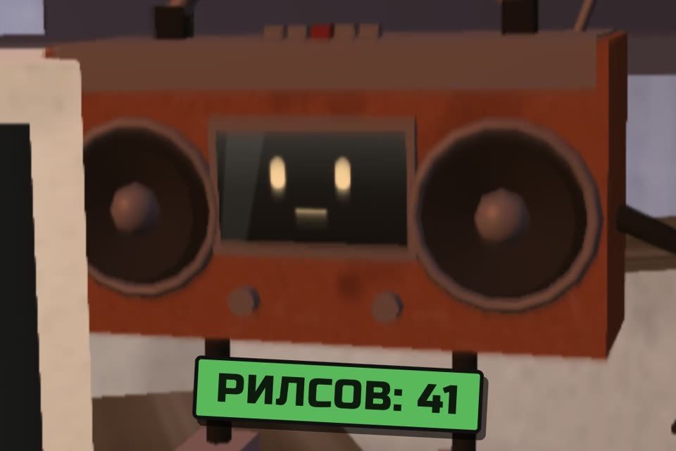

Как дать Claude смотреть рилс по ссылке
Сам Claude Code инстаграм не открывает. Дайте ему кадры из ролика и текст речи, и он ответит, о чём рилс, что на экране и чем он цепляет.
- только публичные ссылки
- без логина и кук
- всё в одной папке
- проверено 27.10.2026
К ролику «Клод, глянь рилс» · обновлено 27 октября 2026

Нужен Mac (на Linux так же), Claude Code, uv и ffmpeg. Claude не смотрит видео как человек: он получает картинки (кадр раз в несколько секунд) и расшифровку речи и складывает из них картину. Быстрое движение между кадрами, музыку и интонацию он не замечает.
Первый результат за 2 шага
Проверьте uv и ffmpeg
Это единственное, что ставится в систему. Всё остальное ляжет в папку ~/rils.
which uv ffmpegЕсли чего-то нет:
brew install uv ffmpegwhich печатает два пути: к uv и к ffmpeg.
Вставьте промпт в Claude Code
Откройте Claude Code в пустой папке, например ~/rils, замените ссылку и вопрос.
Посмотри этот рилс и скажи: [о чём он / что происходит в первые 3 секунды /
какой текст на экране / почему он мог залететь].
Ссылка: https://www.instagram.com/reel/XXXX/
Как смотреть:
- Работай только в этой папке. Ничего не ставь в систему: никаких brew install,
pip install --user, npm -g, pipx. Нужное ставь в ./.venv:
uv venv -p 3.11 .venv && uv pip install -p .venv/bin/python yt-dlp faster-whisper
Если нет uv или ffmpeg, остановись и скажи мне.
- Без логина и без кук: не используй --cookies и --cookies-from-browser.
Если ролик закрыт, удалён или просит войти, остановись и скажи мне.
- Скачай ролик через .venv/bin/yt-dlp в ./work/ (не выше 720p).
- Кадры: ffmpeg, один кадр раз в 2–3 секунды, ширина 512, в ./work/frames/.
- Речь: сначала субтитры (--write-subs --write-auto-subs --sub-langs "ru.*,en.*").
Если их нет, распознай звук локально через faster-whisper, модель small.
Платные API (OpenAI, Groq и другие) не вызывай.
- Открой каждый кадр как картинку и сопоставь со словами по времени.
Ответ:
1. По секундам: что на экране и что говорят.
2. Ответ на мой вопрос.
3. Что не разглядел или не расслышал. Не додумывай то, чего нет в кадрах и тексте.
В конце удали ./work/ вместе с видео: ролик чужой, мы его только посмотрели.Тот же промпт отдельным файлом: prompts/rils.md.
Ответ по секундам: что на экране и что говорят. Потом ответ на ваш вопрос и честный список того, что Claude не разглядел или не расслышал. В конце папка ./work/ с видео удалена.
Свой минимум на трёх программах
То же самое руками, без промпта. Так это и работает внутри.
- Скачать ролик по публичной ссылке программой yt-dlp. Она умеет YouTube, Instagram, TikTok и сотни других сайтов.
- Нарезать кадры программой ffmpeg: один кадр раз в 2–3 секунды, шириной 512 точек. На 40-секундный рилс выходит 14–20 картинок.
- Достать речь. Если у ролика есть субтитры, берём их. Если нет (у рилсов их почти никогда нет), распознаём звук локально моделью Whisper прямо на Маке.
- Отдать Claude. Claude Code открывает кадры как обычные картинки, читает текст и отвечает на ваш вопрос.
mkdir -p ~/rils && cd ~/rils
uv venv -p 3.11 .venv
uv pip install -p .venv/bin/python yt-dlp faster-whisperСкрипт расшифровки, один раз:
cat > transcribe.py <<'EOF'
import sys
from faster_whisper import WhisperModel
model = WhisperModel("small", device="cpu", compute_type="int8")
segments, info = model.transcribe(sys.argv[1], vad_filter=True)
print("язык:", info.language)
for s in segments:
print(f"[{int(s.start)//60:02d}:{int(s.start)%60:02d}] {s.text.strip()}")
EOFДальше на каждую ссылку три команды:
.venv/bin/yt-dlp -f "b[height<=720]/b" -o work/reel.mp4 "https://www.instagram.com/reel/XXXX/"
mkdir -p work/frames && ffmpeg -v error -i work/reel.mp4 -vf "fps=1/3,scale=512:-2" work/frames/f_%03d.jpg
.venv/bin/python transcribe.py work/reel.mp4 > work/transcript.txtfps=1/3 значит кадр раз в 3 секунды. Для быстрого монтажа ставьте fps=1/2 или fps=1, но каждая картинка расходует лимит Claude. При первом запуске Whisper скачает модель small, около 460 МБ, в ~/.cache/huggingface.
Теперь откройте Claude Code в папке ~/rils и попросите: «Открой все кадры из work/frames и work/transcript.txt и скажи, о чём рилс». Или отдайте всю работу ему, промптом выше.
No module named expat: сломан питон, на котором он собран. Та же версия внутри .venv, как выше, отработала. Поэтому ставим её в папку, а не берём системную.Agent Reach из ролика: что он умеет на самом деле
Agent Reach это открытая программа, которая даёт ИИ-агенту одну команду для чтения разных сайтов: YouTube, GitHub, Reddit, Twitter, китайских площадок. Под капотом для видео стоит та же yt-dlp. Лицензия MIT, бесплатно.
- YouTube: работает без логинаНазвание, описание, длительность и субтитры видео. Мы прогнали на коротком публичном ролике, ответ пришёл за 2–6 секунд. Расшифровка речи без субтитров идёт только через API-ключ Groq или OpenAI. Кадров он не делает вообще, то есть картинку ролика Claude не увидит.
- Instagram: открыть рилс по ссылке не можетКанал Instagram помечен как экспериментальный и умеет три вещи: искать людей, показывать профиль и список постов. Для этого нужен вход: программа копирует вход в инстаграм из вашего Chrome в свой отдельный браузер. Авторы сами пишут, что обычно копируется основной аккаунт, и советуют завести второй.
- Ссылка на рилс уходит в общий веб-ридерМы дали ему ссылку на публичный рилс без логина. Сторонний сервис Jina ответил «403 Forbidden», запасной Exa вернул пару строк страницы с чужим ником и «3 days ago». Ни кадров, ни текста ролика.
Итог: для YouTube Agent Reach удобен как «читалка» описаний и субтитров. Чтобы Claude увидел, что происходит в рилсе, нужен свой минимум.
agent-reach на PyPI, по словам авторов, к этому проекту не относится. Ставьте только с GitHub. Команды agent-reach login и копирование входа из Chrome мы не запускали и не советуем: это ваш настоящий аккаунт.Поставить Agent Reach в одну папкубез установки в систему, из тега v1.6.0
Официальная установка (uv tool install …) ставит программу для всего пользователя, а вариант ниже держит её в одной папке. Мы ставили так, из тега v1.6.0:
mkdir -p ~/rils && cd ~/rils
git clone --depth 1 --branch v1.6.0 https://github.com/Panniantong/Agent-Reach agent-reach-src
uv venv -p 3.11 .venv-ar
uv pip install -p .venv-ar/bin/python ./agent-reach-src
.venv-ar/bin/agent-reach youtube subtitle "https://www.youtube.com/watch?v=jNQXAC9IVRw" --lang enСвои настройки он всё равно пишет в ~/.agent-reach/. Удалить всё: стереть ~/rils и ~/.agent-reach.
Плагин claude-video и команда /watchодной командой, но с тремя оговорками
Уже стоит плагин claude-video с командой /watch? Он делает то же одной командой: /watch ссылка вопрос. Мы прогнали его на YouTube и на рилсе, кадры пришли в обоих случаях. Но у версии 0.2.0 три оговорки: субтитры он берёт только английские, речь без субтитров распознаёт только через платный API (Groq или OpenAI), а его установщик setup.py сам ставит ffmpeg и yt-dlp через brew в систему.
Правила
- Только публичные ссылки. Без логина, без кук браузера, без чужих аккаунтов.
- Скачанное нужно, чтобы посмотреть и разобрать. Не перезаливайте чужие ролики и куски из них: автор их не отдавал.
- Условия Instagram и YouTube запрещают автоматический сбор данных без разрешения. Разовый просмотр присланной ссылки и массовое выкачивание это разные вещи: не гоняйте скрипт по чужим профилям пачками.
- После разбора удаляйте папку
work/с видео.
Если застряли
yt-dlp падает с «No module named expat»
Это yt-dlp из brew: сломан питон, на котором он собран. Ставьте yt-dlp в .venv папки, как в своём минимуме, и запускайте .venv/bin/yt-dlp.
yt-dlp перестал скачивать
Instagram и YouTube меняют сайт, и yt-dlp иногда ломается до следующего обновления. Тогда:
uv pip install -p .venv/bin/python -U yt-dlpРолик закрыт или просит войти
Закрытые аккаунты, «Близкие друзья» и сторис по входу без логина не скачать, а логин мы не даём. Промпт в этом случае просит Claude остановиться и сказать вам.
Чего Claude здесь не умеет
- Лайкать, комментировать, подписываться. Он только смотрит, как в ролике.
- Закрытые аккаунты, «Близкие друзья», сторис по входу. Без логина их не скачать, а логин мы не даём.
- Слышать звук. Музыку, интонацию, смех и шумы он не воспринимает, только текст расшифровки. Песню без слов он не опишет.
- Видеть движение между кадрами. Кадр раз в 3 секунды пропускает быстрые склейки и жесты. Чаще кадры дают больше деталей, но съедают лимит.
- Листать ленту сам. Он смотрит то, что вы прислали ссылкой. «Час в рилсах» из ролика это шутка.
- Работать всегда. Instagram и YouTube меняют сайт, и yt-dlp иногда ломается до следующего обновления. Тогда
uv pip install -p .venv/bin/python -U yt-dlp.
Что мы проверили и что нет (27.10.2026)
- Agent Reach v1.6.0 (релиз 23.10.2026), лицензия MIT, около 104 тысяч звёзд на GitHub, 113 открытых задач, последнее обновление 25.10.2026. Ставили в отдельную папку из тега v1.6.0. YouTube (описание и субтитры): работает без логина. Ссылка на публичный рилс: кадров и текста ролика нет (Jina 403, Exa вернул обрывок страницы).
- Свой минимум на публичном рилсе 42 секунды без логина: yt-dlp 2026.8.19 из папки скачал 2,4 МБ за 5 секунд, ffmpeg дал 14 кадров (раз в 3 секунды), faster-whisper small на Маке с Apple Silicon расшифровал английскую речь за 25 секунд, модель уже лежала в кэше. Claude открыл кадры и прочитал текст.
- Плагин claude-video (
/watch) 0.2.0, лицензия MIT, около 19 тысяч звёзд: на YouTube кадры и английские субтитры, на рилсе 18 кадров без текста (платный Whisper не включали). - Не проверяли: вход в Instagram через Agent Reach (нужен ваш аккаунт и копия входа из Chrome), его расшифровку через Groq и OpenAI (платные ключи), рилсы на русском (наш был на английском), TikTok, длинные видео больше 10 минут, Windows.